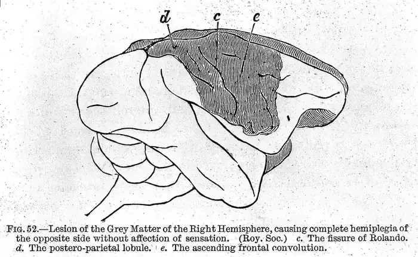

The claim
Julian Jaynes published The Origin of Consciousness in the Breakdown of the Bicameral Mind in 1976. His thesis, in his own terms:
Maps, diagrams and images


- Early civilisations — Egypt, Mesopotamia, the Mycenaeans, the authors of the Iliad — had no introspective self-awareness of the kind we now take for granted.
- Instead, decision-making was “bicameral”: the right hemisphere generated verbal commands, experienced as the voices of gods or dead kings, and the left hemisphere heard and obeyed them.
- As societies grew too complex for this system, the voices fell silent — and consciousness, in the modern sense, was invented to replace them, painfully, over centuries.
The evidence he offered was literary and historical: the Iliad's characters are commanded by gods and never deliberate inwardly; early texts describe hearing divine instruction; the transition appears in later literature, where people begin to reason with themselves.
Why it is compelling
Because the observation is partly true and genuinely strange. Homeric heroes really do not introspect in the way a modern novel's characters do; the gods intervene constantly; there is little vocabulary for inner conflict. Jaynes was a superb reader of ancient texts, and the book is full of passages that make his question feel urgent.
It also offers something rare: a theory of consciousness with a date. Most accounts are timeless; Jaynes said consciousness began around the second millennium BC, which is falsifiable in principle.
No neurological mechanism. The brain does not contain a “bicameral” architecture in which one hemisphere issues auditory commands to the other. Split-brain research shows hemispheric specialisation, not a god-voice generator, and there is no evidence that ancient brains were wired differently from ours.
Ancient people did describe inner life. Egyptian, Mesopotamian and Hebrew texts contain reflection, self-reproach, planning, and metaphors for the heart and mind. The absence of a specific modern vocabulary is not the absence of experience — a point literary scholars made immediately.
“Consciousness” is doing too much work. Jaynes defined it narrowly (introspective, metaphor-based) and then claimed it did not exist. Under most definitions used today, the claim becomes either trivially true or plainly false.
It is not a testable historical hypothesis. You cannot excavate a mental state. The theory can accommodate almost any text, which is the archive's recurring problem: a claim that explains everything explains nothing.
What survives
Quite a lot, intellectually. Jaynes made the study of ancient psychology respectable, and his central question — how did people experience their own minds before there was a word for interiority? — is now taken seriously by classicists and historians of the self, even by those who reject his answer.
He also left a memorable warning about reading the past through modern categories. The Iliad really is not a novel, and assuming that its characters think like us is its own kind of error. The mistake is to conclude that they therefore had no inner experience at all.
Modern work on auditory verbal hallucinations — hearing voices — is a separate and active field, and it does not support the idea that all of ancient humanity was in that state. It does show that the experience is more common and more varied than 20th-century psychiatry assumed.
Sources for this page
- Wikipedia, “Bicameral mentality” — the thesis, evidence and criticismen.wikipedia.org
- Jaynes, The Origin of Consciousness in the Breakdown of the Bicameral Mind (1976)archive.org
- Wired, “God is a Lobster” — Jaynes and his legacywired.com
- NIH/PMC, reviews of auditory verbal hallucinationspmc.ncbi.nlm.nih.gov
Open resources on this topic
- BookWhen The Gods Spoke: Julian Jaynes, the Bicameral Mind, and the Making of Civilization — The Logos / Moshe Reed · 2026 (Internet Archive, free to read)
- BookThe origin of consciousness in the breakdown of the bicameral mind — Jaynes, Julian, 1920-1997 · 1976 (Internet Archive, free to read)
- BookThe Origin of Consciousness in the Breakdown of the Bicameral Mind — Julian Jaynes (Internet Archive, free to read)
- PapersOpen-access articles: DOAJ · PubMed Central · Internet Archive Scholar
- BooksPublic-domain and borrowable copies: Open Library · Project Gutenberg · Google Books
Cite this page
Momin, S. (2026). The Bicameral Mind. The Larger World Archive. https://drsamonline.github.io/LARGE_GLOBE/bicameral-mind.htmlMomin, Sohil. “The Bicameral Mind.” The Larger World Archive, 2026, https://drsamonline.github.io/LARGE_GLOBE/bicameral-mind.html.Momin, Sohil. “The Bicameral Mind.” The Larger World Archive, 2026. https://drsamonline.github.io/LARGE_GLOBE/bicameral-mind.html.@misc{the2026bicameral,
author = {Momin, Sohil},
title = {The Bicameral Mind},
year = {2026},
howpublished = {The Larger World Archive},
url = {https://drsamonline.github.io/LARGE_GLOBE/bicameral-mind.html},
note = {Last reviewed 20 November 2026}
}Last reviewed 20 November 2026 · Corrections policy · this page is not peer reviewed